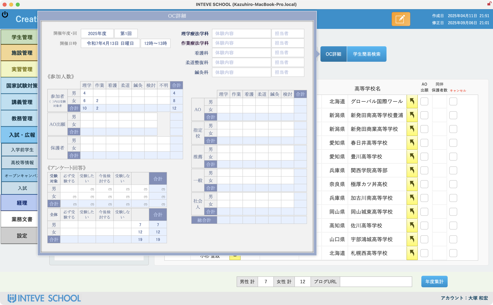
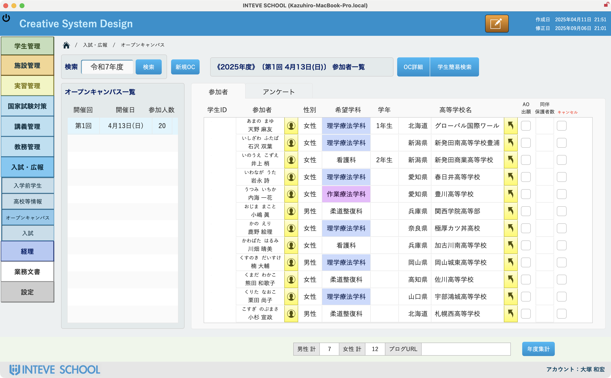

医療系養成校向け マーケティングシステム
「成長の軌跡をデータで描く」
入学から就職まで、未来を拓く、養成校のための統合管理システム。
このシステムは、養成校における学生・生徒の諸々のデータを包括的に管理します。
Core Features
データ分析を通じて、入学後のミスマッチを防ぎ、学校全体のブランド力向上に貢献します。
オープンキャンパス・入試
参加者の情報や興味学科、選考結果を一元管理。参加後のフォローアップや過去データ分析による広報戦略・入試改善に活用できます。
丁寧な個別指導記録
日々の指導内容、学生の理解度、課題などを詳細に記録し、個別指導の質を高めます。学生一人ひとりの個性に合わせたサポートを実現します。
実習から就職までのサポート
就職活動の状況や希望職種、内定先までを一元管理し、キャリア形成を支援。蓄積データは、就職指導の強化や学科の魅力向上に貢献します。
データドリブン広報戦略
『INTEVE SCHOOL』に蓄積された豊富なデータを活用し、戦略的な広報活動を展開します。オープンキャンパス・入試履歴、指導・実習記録、就職活動状況といった多角的なデータを分析。
ターゲット層の明確化、効果的な広報施策の実行、入学後の学生満足度向上、そして卒業生のキャリア支援まで、一貫したマーケティングサイクルを実現します。


まだ見ぬ学生との出会いを
単なるデータ分析に留まらず、貴校の魅力や教育理念を深く理解した上で、創造性豊かなマーケティング戦略をご提案します。
潜在的な学生に響くメッセージ開発、最適なコミュニケーションチャネルの選定などを通じて、貴校と学生の新たな接点を創出します。
FileMakerで変わる教育現場のDX
国家試験対策、臨床実習、マーケティングに必要な情報を一元管理。学習を強力にサポートするシステムをご紹介します。
FileMakerの柔軟性を活かしたオリジナルアプリが、学生データの統合、高校情報連携による戦略的な広報活動に関連した業務効率化を強力に支援します。